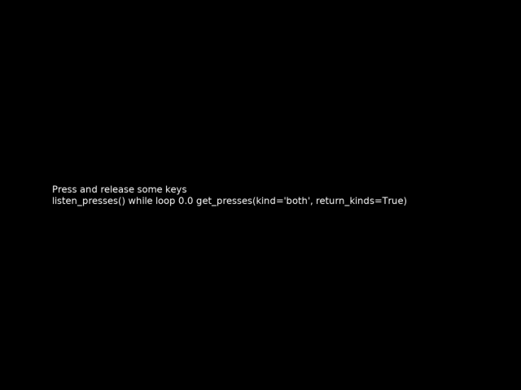

This example demonstrates gathering key-releases as well as presses with the ExperimentController class.
Please note that this currently only works for the keyboard, which has inprecise timing.
Out:
2017-08-11 17:26:32,456 - INFO - Expyfun: Setting up Pyglet audio
2017-08-11 17:26:32,504 - INFO - Expyfun: Setting up screen
2017-08-11 17:26:32,516 - EXP - Expyfun: Set screen visibility True
2017-08-11 17:26:32,555 - INFO - Expyfun: Initializing dummy triggering mode
2017-08-11 17:26:32,559 - INFO - Expyfun: Initialization complete
2017-08-11 17:26:32,559 - EXP - Expyfun: Subject: foo
2017-08-11 17:26:32,559 - EXP - Expyfun: Session: 001
2017-08-11 17:26:33,680 - EXP - Expyfun: Audio stopped and reset.
# Author: Jasper van den Bosch <jasperb@uw.edu>
#
# License: BSD (3-clause)
from expyfun import ExperimentController, building_doc, analyze as ea
print(__doc__)
isi = 0.5
wait_dur = 3.0 if not building_doc else 0.
msg_dur = 3.0 if not building_doc else 0.
with ExperimentController('KeyPressAndReleaseDemo', screen_num=0,
window_size=[1280, 960], full_screen=False,
stim_db=0, noise_db=0, output_dir=None,
participant='foo', session='001',
version='dev', response_device='keyboard') as ec:
ec.wait_secs(isi)
###########################################
# listen_presses / while loop / get_presses(kind='both')
instruction = ("Press and release some keys\n\nlisten_presses()"
"\nwhile loop {}\n"
"get_presses(kind='both', return_kinds=True)")
disp_time = wait_dur
countdown = ec.current_time + disp_time
ec.call_on_next_flip(ec.listen_presses)
ec.screen_text(instruction.format(disp_time))
screenshot = ec.screenshot()
ec.flip()
while ec.current_time < countdown:
cur_time = round(countdown - ec.current_time, 1)
if cur_time != disp_time:
disp_time = cur_time
# redraw text with updated disp_time
ec.screen_text(instruction.format(disp_time))
ec.flip()
events = ec.get_presses(kind='both', return_kinds=True)
ec.write_data_line('listen / while / get_presses', events)
if not len(events):
message = 'no keys pressed'
else:
message = ['{} {} after {} secs\n'
''.format(k, r, round(t, 4)) for k, t, r in events]
message = ''.join(message)
ec.screen_prompt(message, msg_dur)
ec.wait_secs(isi)
ea.plot_screen(screenshot)
Total running time of the script: ( 0 minutes 1.355 seconds)